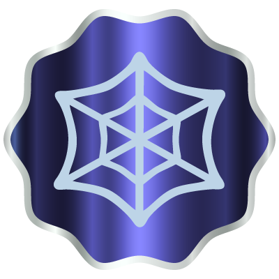
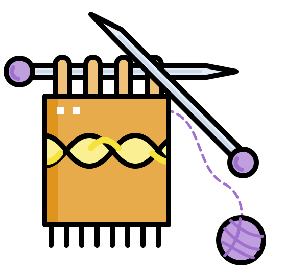
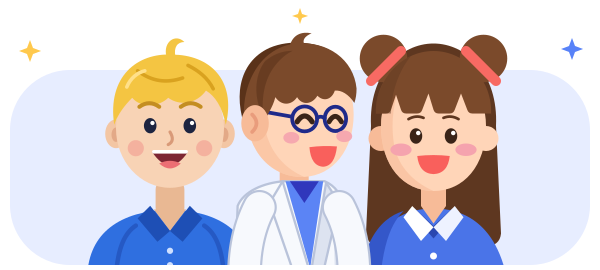

La redde conexiones
Teje relaciones entre las ideas de las cuatro unidades
Ahora toca ver todo junto
Ya probaste, te atragantaste, resolviste crucigramas. Ahora toca ver todo junto: cómo el modo enfocado se conecta con el error, cómo el acceso consciente se conecta con la recuperación espaciada. Aprender de verdad es tejer estas ideas entre sí, no guardarlas en cajones separados.
Frente a ti tienes 8 ideas, dos de cada unidad que ya recorriste. Tu tarea es unirlas: elige dos que vengan de unidades distintas, traza la línea entre ellas, y cuéntanos en una frase por qué están conectadas. Necesitas tejer al menos 4 hilos para ganar tu insignia: 

Las cuatro zonas de tu lienzo
- Unidad 1 Tobías Del devorador al catador
- Unidad 2 Leo Sembrando y cosechando memoria
- Unidad 3 Sofía Domando el monstruo de la procrastinación
-

Unidad 4 El Banquete El gran banquete del aprendizaje
Cómo se teje un hilo
- Haz clic en una idea para seleccionarla.
- Haz clic en una idea de otra unidad. Dos ideas de la misma unidad no se pueden unir.
- Escribe en una o dos frases por qué están conectadas y guarda el hilo.
No hay conexiones correctas o incorrectas: lo que cuenta es que argumentes la relación. Una misma idea puede usarse en varios hilos.
Elige una primera idea.
Conexión guardada.
Llevas 1 de 4 hilos tejidos.

Busca una idea de otra unidad para conectar con esta.
Mira lo que tejiste
Mira lo que tejiste: ya no son 8 ideas sueltas, son una red. Así aprende de verdad el cerebro: no guardando cajones separados, sino construyendo caminos entre ellos.
El retrato de tu red

Tobías, Leo y Sofía celebran tu red.